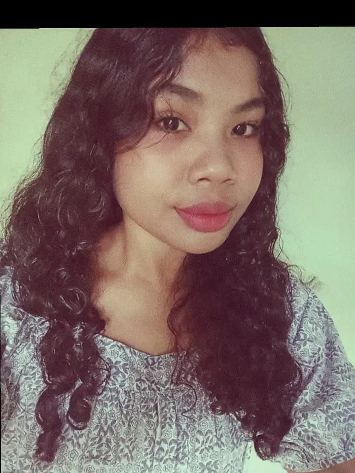

Nama: Yustina Fauwawan
NIM: 2511039
Asal Daerah: Maluku
Status: Mahasiswa Aktif
Program Studi: Teknologi Rekayasa Internet
Kampus: Politeknik Amamapare Timika
Perkenalkan, nama saya Yustina Fauwawan. Saya berasal dari Maluku dan saat ini sedang menempuh pendidikan di Politeknik Amamapare Timika. Saya adalah mahasiswa Program Studi Teknologi Rekayasa Internet.
Saya adalah pribadi yang senang belajar, mencoba hal-hal baru, dan menambah pengalaman.
Tujuan saya kuliah adalah untuk memperdalam pengetahuan tentang teknologi internet, meningkatkan kemampuan di bidang komputer, serta mengembangkan keterampilan agar dapat bermanfaat di masa depan.
Nama Sekolah: [SD NASKAHT WATLAAR]
Nama Sekolah: [SMP NEGERI 2 KEY BESAR]
Nama Sekolah: [SMK AMAMAPARE]
Jurusan: TKJ
Politeknik Amamapare Timika
Program Studi: Teknologi Rekayasa Internet
Email: yustinafauwawan.com
no hp: 085133123496
Terima kasih sudah mengunjungi blog pribadi saya.